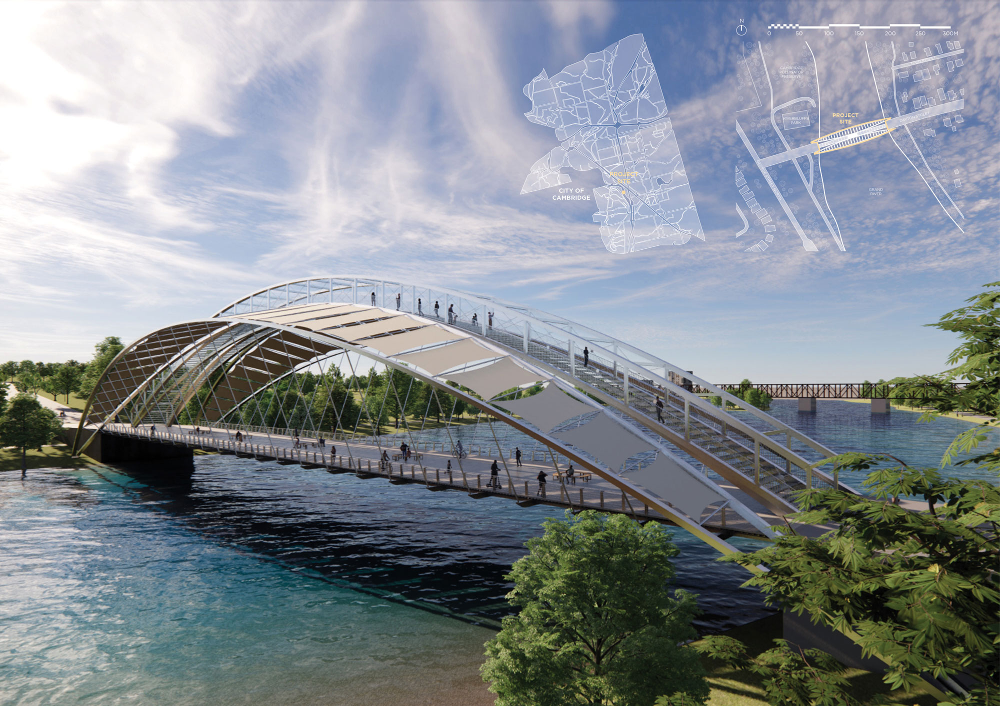
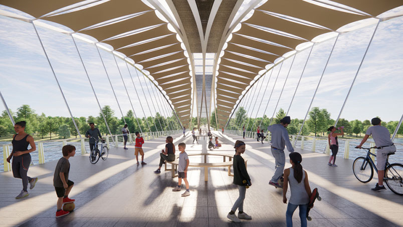
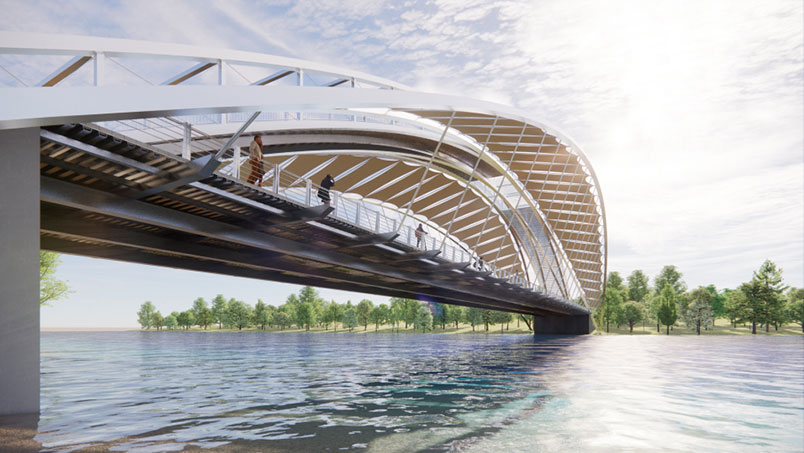
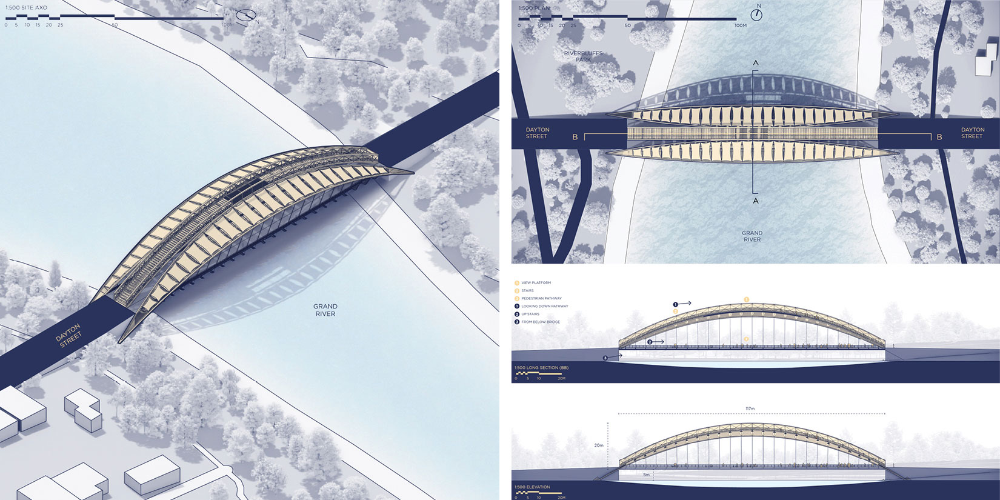
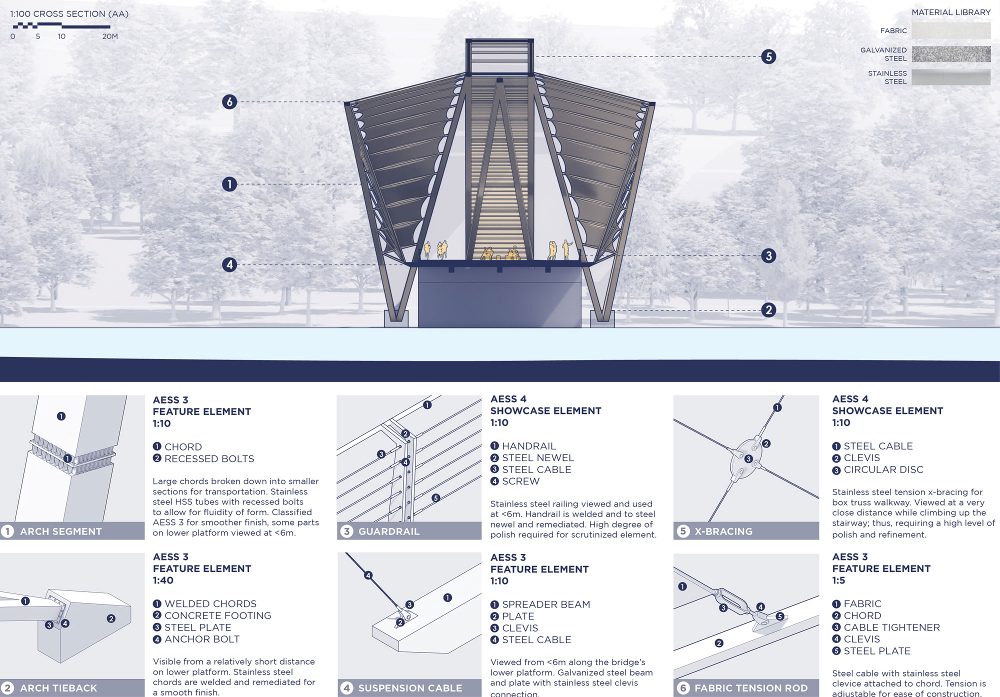

| 2103 | The Grand Crossing | Design |
Spanning between the Blair Road and Greenway Chaplin neighborhood sides of the Grand River within the city of Cambridge is The Grand Crossing: a celebratory pedestrian bridge that acts as a point of convergence and community recreation between the two formerly separated neighborhoods of Cambridge. With a high concentration of public schools and suburban homes within its nearby site context, The Grand Crossing aims to draw in people of all backgrounds and ages, to provide a space for new connections, and to encourage leisure occupation while one basks in the delight of the natural view of the Grand River previously hidden amongst the difficult terrain and foliage.
This project is a large, tied-arch pedestrian bridge that spans between Riverbluff Park and Dayton Street located on opposite sides of the Grand River, respectively. It consists of two levels, the lower of which acts as a shaded recreational space for those who seek to stay and enjoy the view. Along the sides of the lower level, marked by a change in floor material, are cleared pathways for those who are simply looking to cross the bridge. Meanwhile, on the top level is a stairway that leads up to the top of the bridge where the site’s surroundings and view can be appreciated from a new vantage point.
Collaborator: Luna Hu
Course: Architecturally Exposed Structural Steel Design
Course Instructor: Terri Meyer Boake, University of Waterloo
Recognition: 2nd Prize | CISC Architectural Student Design Competition 2021-22, Finalist | CASA/ACEA Student Work Showcase 2022

Exterior Render, Large and Medium Scale Site Context Plan

Experiential render from bridge

Exterior render from river bank

Orthographic Drawing Set: Isometric, Plan, Section, Elevation

Perspective Section and AESS Detail Axonometrics